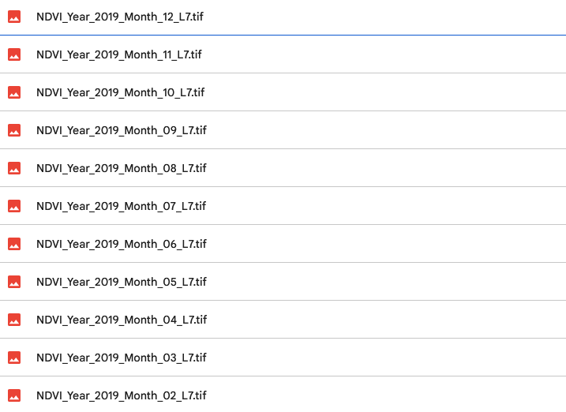
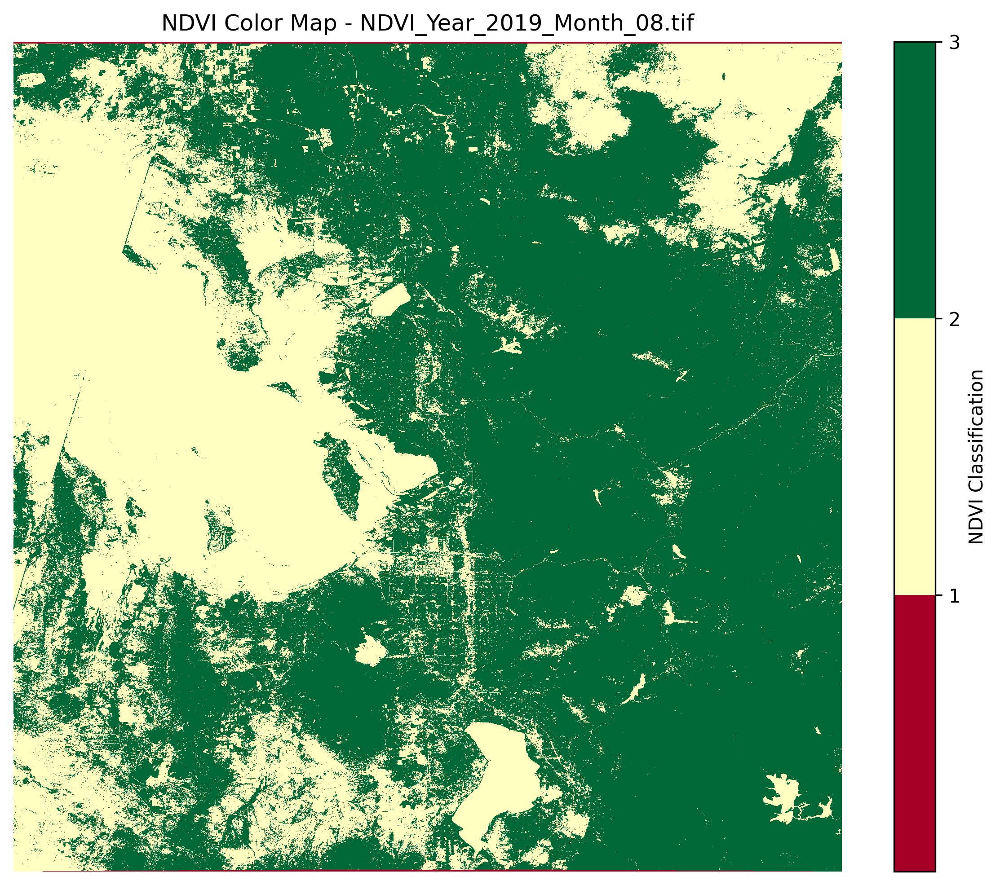
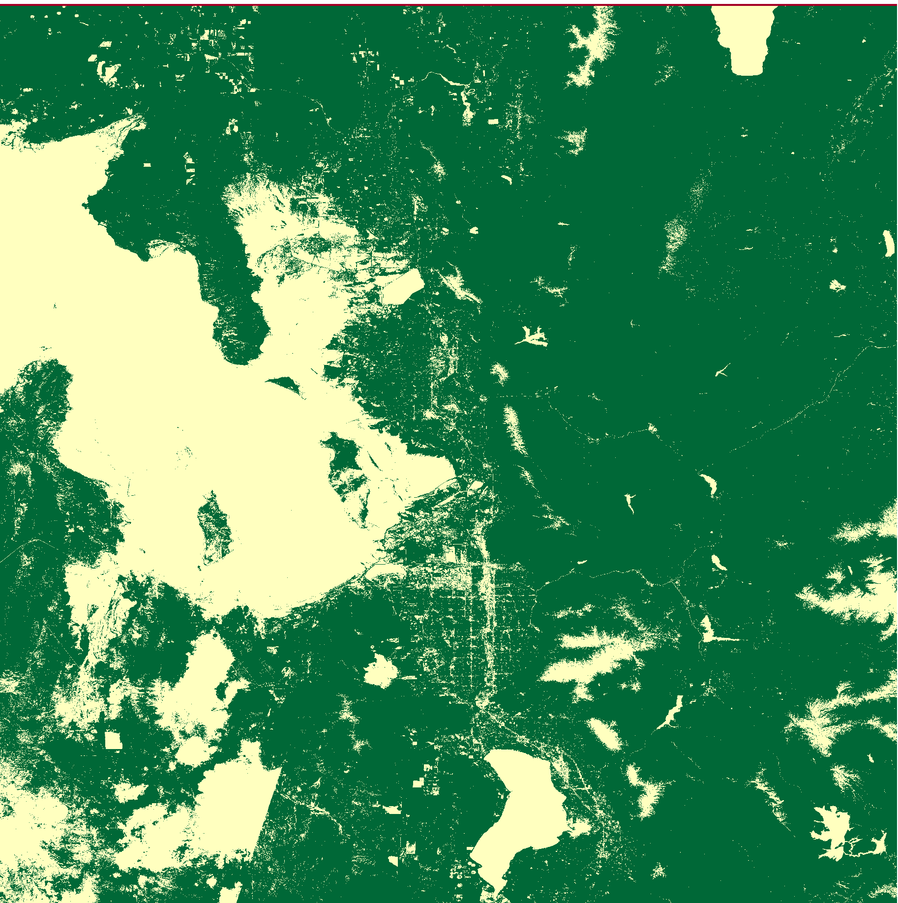
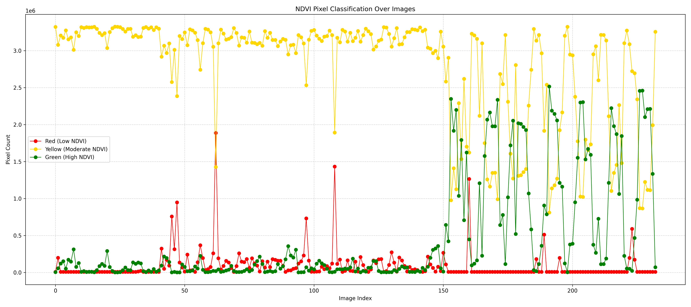

Instructions On How To Use The Code
The Wasatch Front is experiencing rapid environmental changes, from rising temperatures to worsening air quality. By collecting and analyzing real-world data, we aim to provide insights into these shifts and their impact on local ecosystems and human health.
Install Packages In Colab
The Wasatch Front is experiencing rapid environmental changes, from rising temperatures to worsening air quality. By collecting and analyzing real-world data, we aim to provide insights into these shifts and their impact on local ecosystems and human health.

Create Your TIFF Files
The Wasatch Front is experiencing rapid environmental changes, from rising temperatures to worsening air quality. By collecting and analyzing real-world data, we aim to provide insights into these shifts and their impact on local ecosystems and human health.
Create Your NDVI Maps
The Wasatch Front is experiencing rapid environmental changes, from rising temperatures to worsening air quality. By collecting and analyzing real-world data, we aim to provide insights into these shifts and their impact on local ecosystems and human health.
Crop Your Maps
The Wasatch Front is experiencing rapid environmental changes, from rising temperatures to worsening air quality. By collecting and analyzing real-world data, we aim to provide insights into these shifts and their impact on local ecosystems and human health.
Create Your Graphs
The Wasatch Front is experiencing rapid environmental changes, from rising temperatures to worsening air quality. By collecting and analyzing real-world data, we aim to provide insights into these shifts and their impact on local ecosystems and human health.
